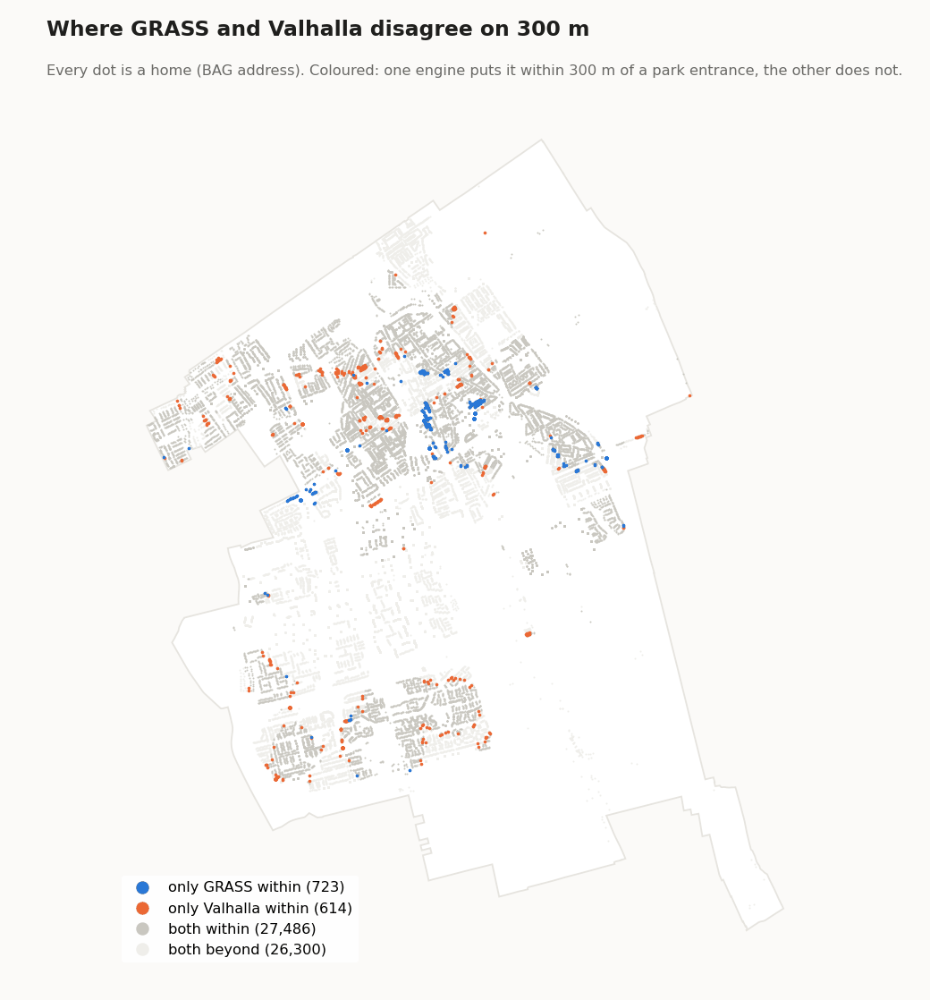

De 300: een park binnen 300 meter
Woont iedereen op loopafstand van een park of bos? Vanaf elke ingang van een park of bos is berekend hoe ver je in 5 minuten loopt over echte wegen en paden. Elke woning in die zone voldoet (groen op de kaart). Ter informatie is ook de zone van 15 minuten berekend.
Zuid-Holland, gewogen naar het aantal woningen per pand. Per gemeente van 51,0% (Nieuwkoop) tot 95,1% (Zoeterwoude) binnen 5 minuten.
Dit zijn de cijfers van de kaart, berekend met FME. Er is nu een nieuwe berekening met alleen open software, een loopafstand per woning en strenger groen: 36,8% van de woningen binnen 300 m, 56,1% binnen 5 minuten. Zie de nieuwe berekening.
Wat wordt er gemeten?
Het artikel vraagt een grote openbare groenvoorziening binnen 300 m van elke woning, "ongeveer 5 minuten lopen". Wij meten die 5 minuten lopen over het netwerk van wegen en paden, gerekend vanaf de ingangen van het groen.
Wat de uitkomst aanneemt
Het artikel laat open vanaf waar en hoe ver je meet. De keuzes hieronder vullen dat in en maken het meeste verschil voor de cijfers. Achter elke keuze staat de kant waarop ze de uitkomst duwt; de redenen staan onder "Keuzes en waarom".
- Een klein park telt mee. Groen telt vanaf 300 m²; de WHO-norm achter de regel is 1 ha. (gunstiger)
- De zone raken is genoeg. Ligt een deel van een pand in de 5-minutenzone, dan halen alle woningen erin de norm, ook bij een lange flat waarvan alleen één uiteinde erin ligt. (gunstiger)
- Lopen vanaf een ingang. Groen zonder pad erin heeft geen ingang en telt niet, en een kortere route die niet in OpenStreetMap staat ontbreekt. (strenger)
- 5 minuten is ongeveer 425 m langs de straat, ongeveer 300 m hemelsbreed, met water, spoor en snelwegen als barrière.
- Openbare toegang is niet gecontroleerd. Een pad het groen in geldt als toegang. (gunstiger)
Stappen
- Groen verzamelen. Parken en bossen uit OpenStreetMap en uit TOP10NL (Kadaster), samengevoegd (stand 2024).
- Te kleine en te smalle stukken weglaten. Alleen groen van minstens 300 m² én met een verhouding omtrek/oppervlak van hoogstens 0,35 blijft over. Die tweede eis haalt lange smalle stroken weg, zoals bermen: een strook moet ongeveer 6 m of breder zijn. Dit groen staat op de kaart (vanaf buurtniveau): donkergroene randen, ingekleurd zodra de woningen te zien zijn. Klik erop voor de soort, de bron en het oppervlak.
- Ingangen bepalen. Alle paden en wegen waarover je mag lopen (OpenStreetMap, binnen 300 m rond elke gemeente) worden gesneden met de rand van het groen. Waar een pad het groen in gaat, ligt een ingang: 27.111 in totaal.
- Loopzones berekenen. Vanaf elke ingang berekent een isochronencalculator (Valhalla) met een netwerkanalyse over de wegen en paden van OpenStreetMap (profiel voetganger) het gebied dat je in 5 en in 15 minuten lopend bereikt. Alle zones worden samengevoegd.
- Woningen indelen. Een BAG-pand met een woonfunctie dat in of op de rand van een 5-minutenzone ligt, voldoet: groen op de kaart. Alle andere woningen zijn rood. Of een rode woning wel binnen 15 minuten ligt, staat in de pop-up.
- Per gemeente, wijk en buurt. Het aandeel woningen binnen 5 (en 15) minuten, op dezelfde gebieden als de 3 en de 30. Een pand telt voor zoveel woningen als het adressen met woonfunctie heeft.
Keuzes en waarom
| Keuze | Waarom | Alternatief dat we niet kozen |
|---|---|---|
| Looptijd over het netwerk | 300 m hemelsbreed kan in werkelijkheid een lange omweg zijn, door water, spoor of een snelweg zonder oversteek. Het artikel spreekt zelf van "ongeveer 5 minuten lopen". | Een cirkel van 300 m (buffer): eenvoudiger, maar negeert barrières. |
| 5 minuten | De netwerkanalyse (Valhalla) rekent voor voetgangers standaard met 5,1 km/u: 5 minuten is ongeveer 425 m over de weg. Met de gebruikelijke omweg van wegen ten opzichte van hemelsbreed komt dat rond de 300 m hemelsbreed uit. | Precies 300 m over het netwerk: strenger dan de 300 m hemelsbreed van de WHO. |
| Kleur alleen op 5 minuten | De regel is 300 m, ongeveer 5 minuten lopen: een woning voldoet of niet. De kaart kleurt daarom alleen groen (binnen 5 minuten) en rood (verder). | Een aparte kleur voor 5–15 minuten: suggereert een tussencategorie die de regel niet kent. |
| 15 minuten als extra informatie | Laat zien of woningen die de 300 niet halen er net naast zitten of echt ver van groen wonen. Te zien in de pop-ups en als looptijdzone, niet in de kleuren. | Helemaal weglaten. |
| Vanaf de ingangen | Je gaat een park in via een pad. Rekenen vanaf de rand zou ook hekken, water en dichte bosranden als toegang tellen. | Afstand tot de rand van het groen. |
| Minstens 300 m², niet te smal | Plantsoentjes en bermstroken zijn geen plek om te recreëren; de vormeis haalt stroken weg die wel groot zijn. | De WHO-grens van 1 ha (zie beperkingen). |
| OSM én TOP10NL | Beide bronnen missen stukken: OSM is sterk in parken en paden, TOP10NL in bos en terreinen buiten de stad. | Eén bron: meer gaten. |
| Pand telt als het de zone raakt | De voordeur ligt ergens aan de gevel; als een deel van het pand in de zone ligt, is het groen binnen bereik. | Alleen het middelpunt van het pand: strenger bij grote panden. |
| Open-source isochronencalculator | Gratis, reproduceerbaar en met een voetgangersprofiel over OpenStreetMap. | Commerciële routediensten: kosten en niet te herhalen. |
Klopt dit voor mijn woning?
Per buurt, wijk en gemeente geeft de kaart een betrouwbaar beeld. Per woning is het een goede indicatie, maar geen meting ter plekke. Is jouw woning rood terwijl er een park vlakbij lijkt te liggen? Dan kan dat hierdoor komen:
- De route is langer dan hemelsbreed. We rekenen met 5 minuten lopen over bestaande wegen en paden. Ligt er water, spoor of een drukke weg zonder oversteek tussen, dan kan een park dat dichtbij lijkt toch verder lopen zijn.
- De ingang ligt aan de andere kant. We rekenen tot een ingang waar een pad het groen in gaat, niet tot de rand. Een park met een hek of sloot aan jouw kant telt vanaf de dichtstbijzijnde ingang.
- Het groen telt niet mee. Een grasveld zonder paden, een smalle groenstrook of een privétuin is geen park in deze berekening. Nieuw aangelegd groen kan nog ontbreken in de kaartbronnen.
- Een pad ontbreekt in OpenStreetMap. Een doorsteek die je zelf altijd neemt, maar die niet op de kaart staat, kent de netwerkanalyse niet.
Of een rode woning wel binnen 15 minuten ligt, zie je in de pop-up.
Nieuw: de 300 met open software
De 300 is opnieuw berekend voor de hele provincie, nu volledig met software van OSGeo uit OSGeo4W, dezelfde installatie als QGIS. GDAL zoekt de ingangen van het groen en bouwt het wandelnetwerk uit OpenStreetMap, GRASS GIS berekent de loopafstanden, en QGIS toont de uitkomst. Elke woning krijgt een loopafstand in meters tot de dichtstbijzijnde ingang van een park of ander openbaar groen. Daarmee zijn 300 m, 5 minuten en 15 minuten filters op dezelfde uitkomst. Ter controle berekent Valhalla, de routeplanner van de oude berekening, hetzelfde nog een keer.
De kaart toont nog de FME-berekening van hierboven. Die gaat over op de nieuwe methode zodra open water uit het groen is geknipt (zie "Nog te doen" onderaan dit deel).
Welk groen telt
Drie bronnen: de parken uit de provinciale voorzieningenkaart (OpenStreetMap en TOP10NL, peildatum 17 september 2025); uit TOP10NL de functionele gebieden park, recreatiegebied, natuurgebied, nationaal park, landgoed, heemtuin en botanische tuin; en uit TOP10NL ook begraafplaatsen en volkstuinen. Eendenkooien tellen niet mee: die zijn meestal afgesloten. Stukken kleiner dan 300 m² en smalle stroken vallen af. Wat overlapt of elkaar raakt wordt één groengebied, zodat een pad van het ene stuk groen het volgende in geen ingang is. Zo ontstaan 1.891 groengebieden met 11.270 ingangen.

Uitkomst voor Zuid-Holland
| Aandeel woningen binnen | GRASS | Valhalla | Valhalla, zones | FME (op de kaart) |
|---|---|---|---|---|
| 300 m | 36,8% | 38,1% | 46,4% | niet berekend |
| 5 minuten (425 m) | 56,1% | 57,1% | 64,1% | 79,1% |
| 15 minuten (1.275 m) | 97,9% | 98,1% | 98,2% | 99,2% |
1.797.970 woningen (BAG-adressen met woonfunctie, dezelfde als bij de 3). Per gemeente ligt binnen 300 m van groen 11% (Hardinxveld-Giessendam, Lisse) tot 60% (Oegstgeest).
Expansion: wat je lopend bereikt
Valhalla kan vanaf een punt alle straten en paden teruggeven die je lopend bereikt, met de loopafstand tot elk stuk. Dat heet expansion. Hieronder vanaf het Provinciehuis aan het Zuid-Hollandplein in Den Haag.

GRASS doet in wezen hetzelfde, vanaf alle ingangen tegelijk: elk kruispunt van het wandelnetwerk krijgt de kortste loopafstand tot een ingang. Een woning krijgt de afstand van het dichtstbijzijnde punt op straat, plus het stukje van de woning naar die straat.
Waarom geen zones meer
De oude berekening tekende rond de bereikte straten een vlak, de isochroon, en telde elke woning in dat vlak mee. Zo'n vlak is grof: het dekt ook de binnenkant van bouwblokken, water en spoorterrein, waar de wandeling omheen gaat.

In de provincie ligt 46,4% van de woningen in de 300 m-zones, maar 38,1% echt binnen 300 m lopen.
Fietspaden tellen als looproute
Volgens de verkeersregels mag je op een fietspad lopen als er geen trottoir of voetpad is. De berekening laat
voetgangers daarom over fietspaden lopen; ruiterpaden tellen niet mee. Het standaardprofiel van Valhalla sluit
fietspaden af. Daarom krijgt Valhalla zijn eigen regels met één wijziging: fietspaden zijn open voor voetgangers,
tenzij ze in OpenStreetMap foot=no hebben. Dat scheelt veel: in Delft valt met het standaardprofiel 87%
van de woningen binnen 300 m van het oude groen, met fietspaden 91%.

GRASS en Valhalla vergeleken
Beide krijgen dezelfde ingangen, dezelfde woningen en dezelfde OpenStreetMap-gegevens. Ze zijn het voor 97,8% van de woningen eens of die binnen 300 m van groen wonen. Bij 71% van de woningen scheelt de afstand hoogstens 10 m, bij 93% hoogstens 50 m.

Waar ze verschillen, rekent Valhalla vaker korter. Valhalla bereikt een woning ook via haar eigen privé- of
bestemmingsweg; het netwerk voor GRASS laat wegen met access=private weg en verbindt de woning in een
rechte lijn met de dichtstbijzijnde openbare weg.

Vergeleken met de FME-berekening
FME telde 79,1% van de woningen binnen 5 minuten, GRASS 56,1%. Per woning zijn ze het voor 69% eens. Het verschil zit vooral in het groen: de FME-berekening telde alles van haar groenkaart mee, ook bosjes, struweel, tuinen, golfbanen en sportvelden. De nieuwe bronnen bevatten alleen parken, natuur, recreatiegebieden, landgoederen, begraafplaatsen en volkstuinen. De rest van het verschil komt van de zones.
Rekentijd
| Stap (hele provincie) | GRASS | Valhalla |
|---|---|---|
| Groen: afstand tot elk kruispunt, of expansion en isochronen | 18,5 min | 11 min |
| Woningen: 1,8 miljoen adressen | 4,8 min | 12,1 min |
| Samen | 23 min | 23 min |
Op een werkstation met 6 kernen en 64 GB geheugen. Daarnaast duurt het voorbereiden van groen, ingangen, netwerk en woningen 8 minuten. Beide programma's zijn dus even snel. De berekening gaat verder met GRASS, omdat dat met QGIS wordt meegeleverd en niets extra's vraagt.
Nog te doen
- Water telt nu als groen. Natuurgebied en nationaal park uit TOP10NL bevatten veel open water (Haringvliet, Hollands Diep, Voordelta, Biesbosch). Een pad langs zo'n oever wordt dan een parkingang. Eerst wordt open water uit het groen geknipt; daarna gaat de kaart over op deze berekening.
- 99 groengebieden in de provincie hebben geen ingang, vooral volkstuinen en begraafplaatsen zonder pad erin en zonder straat binnen 10 m.
De code staat in
indicator_300_park/.
Beperkingen en open punten
- 300 m² is veel kleiner dan de WHO-norm van 1 ha. Het artikel en de WHO bedoelen een grote openbare groenvoorziening; hier telt ook een klein park mee. De uitkomst is daardoor gunstiger dan volgens de strikte norm. Een berekening met 1 ha is het eerste verbeterpunt.
- Openbaarheid. Of het groen openbaar toegankelijk is, is niet gecontroleerd; een ingang betekent alleen dat er een pad het groen in gaat.
- Groen zonder paden (een open grasveld aan de straat) krijgt geen ingang en telt dus niet mee.
- Gemaakt met FME, met een isochronencalculator (Valhalla) die tijdelijk lokaal draaide. De stappen zijn open data en open software; de workbench staat in de repository, maar is alleen met FME te draaien. De nieuwe berekening met alleen open software staat hierboven.
Code en bronnen
| Stap | Waar |
|---|---|
| Groen, ingangen, loopzones, indeling panden | FME-workbench 300_2025 regel.fmw |
| Aandeel per gemeente/wijk/buurt, kaarttegels | web/build_tiles_30_300.py |
| Parken en bossen op de kaart | web/build_tiles_groen.py |
| Gegevens | Bron | Stand |
|---|---|---|
| Parken en bossen | OpenStreetMap en TOP10NL (Kadaster) | 2024 |
| Paden en wegen | OpenStreetMap, extract Zuid-Holland (Geofabrik) | 2025 |
| Looptijd | Isochronencalculator (Valhalla), profiel voetganger | 2025 |
| Panden met woonfunctie | BAG (provinciale kopie) | 9 december 2025 |